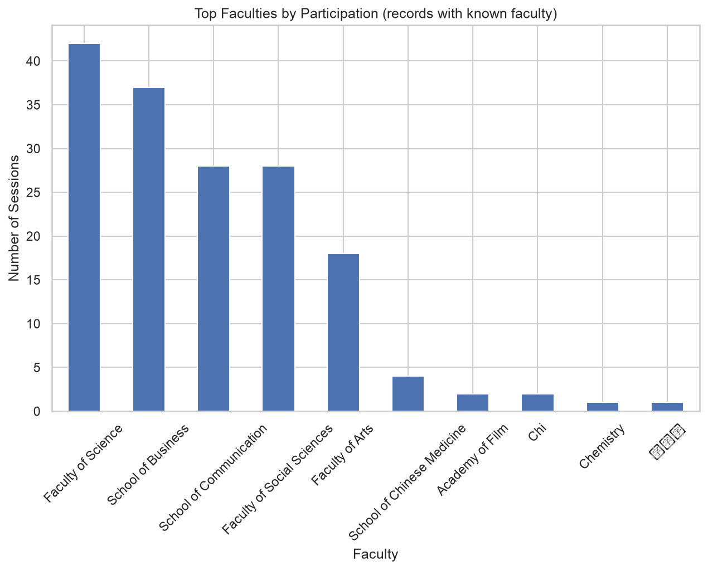

Privacy note: All student and staff names have been replaced with anonymized identifiers.
This report is intended for internal policy and administrative review only.
282
Unique Teachers/Tutors
2920.5
Total Service Hours
Mar 2023 – Jul 2025
Date Range
Sessions by Programme and Academic Year
Unique Students by Programme
Total Service Hours by Programme
Sessions Over Time
Sessions by Day of Week
Top Teachers/Tutors by Sessions
Top Faculties by Participation

Distribution by Year of Study
Sessions per Student
Sessions Heatmap: Programme × Month
Generated locally from anonymized LC attendance data.
For questions or access to the underlying data, contact the Innovation Officer.